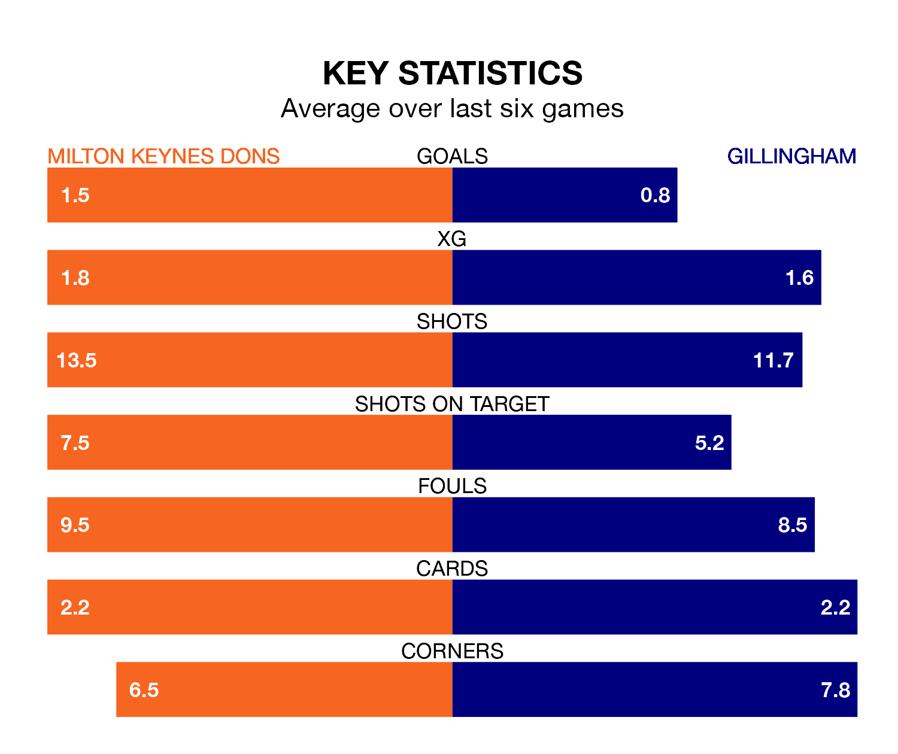

Milton Keynes Dons host Gillingham on Saturday at Stadium mk in EFL League Two.
In their last league match, on Tuesday, Milton Keynes beat AFC Wimbledon 3-1 at home, with goals from Daniel Kemp, Ryan Johnson (own goal) and Warren O.
Gillingham drew, 1-1 at home against Forest Green Rovers on January 20, with Oliver Hawkins scoring their goals.
In Jake Turner, Gillingham can rely on one of the league's safest pair of hands. He has kept 10 clean sheets in his 27 appearances this season, and no 'keeper has prevented the opposition scoring more often in EFL League Two.
In Milton Keynes's net, Craig MacGillivray has six clean sheets in 24 games.
With 24 goals in 27 games so far this season, the Gills are the league's lowest scorers with 0.9 goals per game. But they are conceding fewer than average too, letting in 32 goals at a rate of 1.2 per game.
Dons, meanwhile, are above average scorers, with 1.7 goals per game, compared to a league average of 1.5. They have conceded 1.3 goals per game.
In the last 10 years, Milton Keynes and Gillingham have played each other on 13 occasions. They won six each, and they drew once.
On average, the Dons scored 1.7 goals and the Gills 1.5 in those matches.
Their last meeting was on October 7, when Gillingham won 2-1 at home.
The Dons are sixth in the table after 27 games, of which they have won 13 and drawn six, earning 45 points.
The visitors are two places behind the home side in eighth, with 13 wins and three draws putting them on 42 points.
Milton Keynes are in reasonable form in EFL League Two, with four wins and two losses from their last six games.
With three wins and two draws over that period, Gillingham's form is slightly worse – they have taken 11 points from 18, compared to Milton Keynes's 12.
Saturday's match will be refereed by Carl Brook, who has taken charge of five EFL League Two games so far this season, issuing no red cards and booking 27 players. He has not awarded any penalties.
The last Milton Keynes game Brook refereed was a 3-2 away win against Colchester United on August 19. He is yet to oversee a match featuring Gillingham this season.
Updated: 09:07 (UTC), 24/01/24